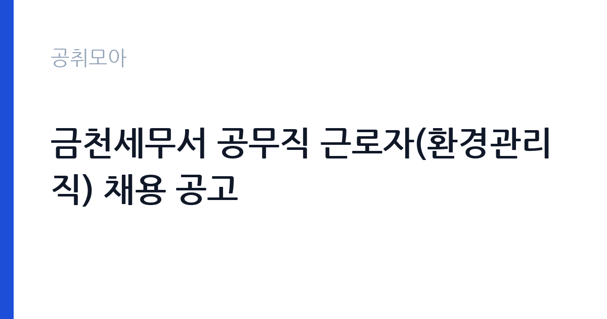

[국가기관] 금천세무서 공무직 근로자(환경관리직) 채용 공고
국세청 서울지방국세청 금천세무서 · 서울 · 마감 2026-11-02 (D-8) · 출처 나라일터

한눈에 보는 모집 조건
| 기관 | 국세청 서울지방국세청 금천세무서 |
|---|---|
| 공고명 | 금천세무서 공무직 근로자(환경관리직) 채용 공고 |
| 고용형태 | 공무직 |
| 근무지 | 서울 |
| 게시일 | 2026-10-26 |
| 마감일 | 2026-11-02 (D-8) |
지원자격, 이렇게 읽으세요
- 공무직(환경관리) 1명
- 접수 ~2026-11-02 마감
- 세부 조건은 원문 공고문 확인
공무직 환경관리직은 국가공무원이 아니라 근로기준법과 기관의 공무직 관리 규정이 함께 적용되는 자리입니다. 응시 자격의 핵심은 학력과 경력이 아니라 결격사유 해당 여부와 실제 근무 가능 여부입니다. 병역을 마쳤거나 면제된 남성, 채용 신체검사에서 직무 수행에 지장이 없다고 확인된 사람이 대상이 되며, 성폭력·아동청소년 대상 범죄 등으로 채용이 제한되는 사유가 별도로 정해져 있습니다. 공고문에는 응시 자격과 함께 제출서류 목록이 붙임으로 들어 있으므로, 주민등록등본과 자격 확인서류 가운데 무엇을 요구하는지 접수 전에 대조해 두시는 편이 안전합니다.
이 공고의 포인트
이 공고의 첫 번째 특징은 접수 창구가 짧다는 점입니다. 10월 29일 시작해 11월 2일 마감이므로 주말을 끼면 실제로 서류를 준비할 수 있는 날은 두세 날에 그칩니다. 두 번째는 선발 인원이 1명이라는 점입니다. 환경관리 직무는 지원자 pool이 넓은 대신 최종 인원이 한 명이라 면접 비중이 커지고, 근무 태도와 장기 근무 의사를 어떻게 보여주느냐가 당락을 가릅니다. 세 번째는 세무서 청사라는 근무 환경입니다. 민원인이 하루 종일 드나드는 건물이라 청결 유지와 민원 응대가 동시에 요구되고, 국세 업무 특성상 연말과 신고 기간에는 청사 관리 수요가 늘어납니다.
전형은 어떻게 진행되나
전형은 서류심사와 면접심사를 기본으로 하고, 필요에 따라 채용 신체검사와 결격사유 조회가 뒤따릅니다. 서류 단계에서는 응시 자격 충족 여부와 제출서류의 형식 요건을 확인하며, 이 단계에서 서류 누락이나 기재 오류로 탈락하는 사례가 적지 않습니다. 면접은 직무 이해도와 근무 태도, 민원인 응대 방식, 조직 적응력을 확인하는 방식으로 진행되고 결과는 개별 통보로 알려집니다. 최종합격 이후에도 신원조회와 신체검사 결과에 따라 임용이 취소될 수 있으므로, 접수 시 기재한 경력과 자격은 증빙과 정확히 일치해야 합니다. 전형 일정과 배점은 첨부 공고문에 정리되어 있으니 원문을 기준으로 준비하십시오.
이런 분께 추천해요
- 서울 금천구 인근에 거주해 출퇴근이 안정적인 분
- 청사 환경 정비와 시설 관리 경험이 있는 분
- 민원인이 많은 공공 청사에서 응대 예절을 지킬 수 있는 분
지원 전 체크리스트
- 공고문 첨부파일에서 응시 자격과 제출서류 목록을 내려받아 확인했는가
- 주민등록등본·병역 관련 서류 등 발급에 시간이 걸리는 서류를 미리 신청했는가
- 장애인 채용 우대 조항과 필요한 증빙 제출 방식을 확인했는가
- 마감일 시스템 접속 지연을 피해 하루 전까지 제출을 마쳤는가
모집 일정과 제출 타이밍
공고 게시일은 10월 26일이고 접수는 10월 29일 시작해 11월 2일 마감입니다. 게시일과 접수 개시일 사이에 사흘의 여유가 있으니 이 기간에 공고문을 읽고 서류를 준비하는 것이 가장 효율적입니다. 주민등록등본과 가족관계증명서 같은 서류는 온라인 발급이 가능하지만, 자격 확인에 시간이 걸리는 항목이 있으면 접수 첫날 신청해 두십시오. 마감일에는 접속이 몰리는 경우가 있으므로 11월 1일까지 제출을 끝내는 일정을 권합니다. 서류 합격자 발표와 면접 일정은 별도 통보되므로 접수 후에도 연락 가능한 번호를 유지해야 합니다.
직무 이해하기: 국가기관
환경관리직의 실제 업무는 세무서 청사의 청결과 시설 상태를 유지하는 일입니다. 민원실과 상담실, 화장실, 계단, 복도처럼 사람이 많이 오가는 공간을 매일 점검하고 청소하며, 쓰레기 분리배출과 재활용품 정리를 담당합니다. 계절에 따라 방역과 소독 보조, 냉난방 시설 주변 정비, 청사 주변 환경 정리 업무가 더해집니다. 국세 업무는 신고 기간과 연말에 민원이 몰리므로 그 시기에는 청사 관리 수요가 함께 늘어납니다. 청소 용구와 소모품의 재고를 확인하고 부족한 물품을 요청하는 일도 업무에 포함되며, 시설 이상을 발견하면 담당 부서에 즉시 알리는 역할을 맡습니다.
자기소개서 작성 팁
환경관리직 자기소개서는 거창한 성과보다 꾸준함과 책임감을 보여주는 쪽이 유리합니다. 청소나 시설 관리, 건물 미화, 요양·복지 시설 봉사처럼 손이 가는 일을 오래 해온 경험이 있다면 근무 기간과 담당 공간, 개선한 점을 구체적으로 쓰십시오. 지원 동기는 세무서라는 공간의 성격과 연결하면 설득력이 생깁니다. 민원인이 하루에도 수백 명 오가는 청사에서 환경이 곧 기관의 인상이 된다는 점을 본인의 경험과 붙여 서술하십시오. 마지막에는 장기 근무 의사와 안전 수칙 준수, 근태 관리에 대한 다짐을 한두 문장으로 정리하면 좋습니다.
면접 준비 포인트
면접에서는 성실성과 근무 지속 가능성을 확인하는 질문이 중심이 됩니다. 청소 업무의 우선순위를 어떻게 정할지, 민원인이 통로를 막고 있을 때 어떻게 안내할지, 상사가 지시한 일과 눈에 보이는 일이 다를 때 어떻게 처리할지 같은 상황형 질문이 나옵니다. 정답을 외우기보다 본인이 실제로 해본 경험을 짧게 붙여 답하는 편이 훨씬 낫습니다. 체력과 건강 상태, 거주지와 통근 시간도 실질적인 평가 요소입니다. 금천구까지 출퇴근이 가능한지, 장기간 근무할 의사가 있는지를 분명히 밝히십시오.
급여·근무조건 읽는 법
공무직 근로자의 보수는 소속 기관의 공무직 임금표를 적용받아 기본급에 정액급식비, 명절휴가비, 초과근무수당이 더해지는 구조입니다. 이번 공고는 본문에 월 급여 실액을 싣지 않고 첨부 공고문의 처우 항목으로 안내하고 있어, 구체적인 금액은 원문 보수표에서 확인해야 합니다. 하한선은 법으로 정해져 있습니다. 2026년 적용 최저임금은 시급 10,320원, 월 환산 2,156,880원(주 40시간, 월 209시간 기준)이며 고용노동부 고시 제2025-47호로 확정된 금액입니다. 실제 수령액은 기본급에서 국민연금·건강보험·고용보험과 소득세를 뺀 금액이므로 세전 금액의 약 9% 안팎이 공제된다고 보고 계산하시면 됩니다. 무기계약으로 채용되는지, 계약 기간이 정해진 기간제인지는 임용과 동시에 확인해야 할 핵심 조건입니다. 정년까지 근무가 보장되는 무기계약이라면 월 급여가 다소 낮아도 누적 소득과 고용 안정성에서 차이가 크게 벌어집니다.
자주 묻는 질문
- 접수 기간이 나흘뿐인데 서류 준비가 가능한가요?
10월 29일부터 11월 2일까지이므로 주말을 감안하면 실제 준비 기간은 짧습니다. 공고문과 제출서류 목록을 먼저 확인하고 온라인 발급이 가능한 서류부터 처리하면 기간 안에 충분히 마칠 수 있습니다. - 환경관리직은 어떤 일을 하나요?
세무서 청사의 청소와 시설 상태 점검, 쓰레기 분리배출, 방역·소독 보조, 청사 주변 정리를 담당합니다. 민원이 몰리는 시기에는 관리 수요가 늘어납니다. - 장애인 채용 우대는 어떻게 적용되나요?
나라일터 공고에 장애인 채용 항목이 표시되어 있고, 구체적인 우대 방식과 필요한 증빙은 첨부 공고문에 적혀 있습니다. 지원 전에 원문의 우대 조항을 반드시 확인하십시오.
함께 보면 좋은 공고
[국가기관] [공군 역사기록관리단] 26년 한시임기제군무원 채용 공고(수정) — 마감 2026-11-03[국가기관] 2026년 국립수목원 공무직근로자 채용공고 — 마감 2026-11-06[국가기관] 2026년 통일부 전문임기제 다급(영상PD) 경력경쟁채용 공고 — 마감 2026-11-02출처: 나라일터 공개정보를 바탕으로 공취모아가 정리한 안내글입니다. 모집 조건·일정은 변경될 수 있으니 지원 전 반드시 원문 공고문을 확인하세요. 본 글은 정보 제공용이며 합격을 보장하지 않습니다.